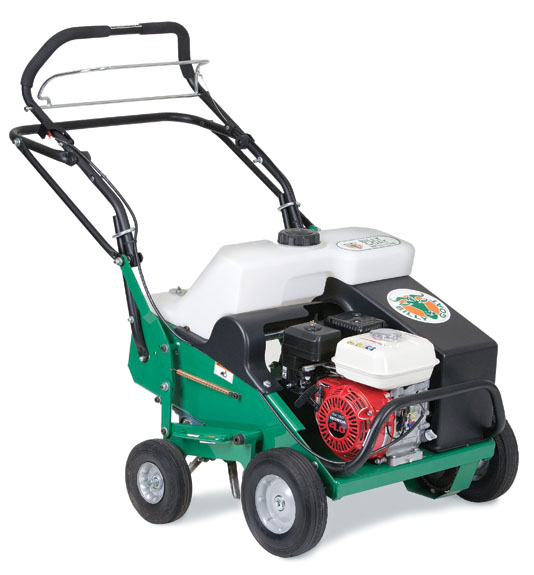

Bledsoe Rentals has a full line of lawn renovation equipment ready to rent!
all lawns need attention now
Ready to renovate your lawn? We have you covered!
Even if you have beautiful lawn now, it needs immediate attention from Now thru October. After a summer of kids, pets, volleyball games, and heavy mowers tromping & rolling across your lawn, the least you can do to insure your lawn remains beautiful is to rent a Core Aerator. All of that summer lawn traffic will compact the soil to the extent that roots can no longer grow and fertilizers cannot get to the roots to be absorbed by the grass plants. In addition, compacted lawns require more frequent and extensive watering due to runoff and poor penetration to the roots. To illustrate, think about trails in the woods. Those trails are so compacted from foot traffic that they can no longer support any type of plant growth. You lawn is no different than those trails.
Core aeration is the best way to solve this compaction problem. These professional units have closed tine that actually withdraws a small core of soil that deposits it on top of your lawn's thatch layer. These cores of soil actually help your lawn's thatch layer deteriorate into top soil. Also, the small holes give you existing grass roots the much needed room to once again grow and breathe and they allow fertilizers to get to the root layer, giving you a lush healthy lawn. Core Aerators are available for rent in both self-propelled and towable models. Be sure you water your lawn the day before renting a Core Aerator to insure maximum penetration of the tines.
What if your lawn has been damaged this summer by excessive heat, insects, or disease, and you need to either completely rebuild or at least over seed your lawn? Not only do you need to aerate to loosen the compacted soil, you also need to remove the thatch layer if it exceeds 1/2 inch, as well as put shallow grooves in your lawn for your seed to catch in and have a better chance to germinate. To remove heavy thatch the best machine to rent is a Power Rake. Power Rakes have a reel of free swinging flails that, if set to the proper depth will pull the thatch layer up to the surface where it can easily be removed by hand raking, vacuum, or using your lawn mower. Removing the excessive thatch will then expose the bare ground you can then prepare for reseeding.
Reseeding your lawn successfully depends upon proper soil preparation. This can be done by renting a Lawn Slicer (Verticut), Overseeder or the New Self-Propelled Overseeder. All of our Lawn Renovation Equipment and Aerators are made in Lee's Summit by Billy Goat Industries.
The Lawn Slicer (Verticut) looks like a Power Rake, but instead of the free swinging flails; the Lawn Slicer (Verticut) has knives that will put 1/4 inch grooves in the soil. Your seed will wash into those grooves and with proper watering, will sprout in 7 to 14 days.
If you want to save a trip over the lawn and improve your percentages of germination further, you can rent an Overseeder. The Billy Goat Overseeder is a Lawn Slicer with a Seed Box attached to the front which drops the seed in front of the blades, setting more of the seed directly into the grooves made by the slicer blades.
To get maximum seed germination on larger lawns, you can rent the New Billy Goat Overseeder. This unit is selfpropelled; it's heavier and has disc type carbide blades that will also cut shallow grooves in your soil.
Whichever machine you decide to rent, please remember not to go deeper than the recommended 1/4 inch. While grass has to be in the soil to germinate, burying it too deep will keep if from coming up and will probably damage the belts and blades of the machine you rent.
Hopefully, this article has answered most of your questions regarding fall lawn care. However, should you still have questions please call our store and one of our Rental Project Advisors will be glad to help!